vignettes/Session_3_imaging_assays.Rmd
Session_3_imaging_assays.RmdIn this session we will learn the basics of imaging-derived spatial transcriptomic data. We will learn how to visualise, manipulate and analyse single molecule data.
We will maintain the use of tidyomics that we learned in
Session 2. The programming style, in contrast of
Session 1 will make use of the |> (pipe)
operator.
# https://bioconductor.org/packages/devel/data/experiment/vignettes/SubcellularSpatialData/inst/doc/SubcellularSpatialData.html
# BiocManager::install("stemangiola/SubcellularSpatialData")
# Tidyverse library(tidyverse)
library(ggplot2)
library(plotly)
library(dplyr)
library(tidyr)
library(purrr)
library(glue) # sprintf
library(stringr)
library(forcats)
library(tibble)
# Plotting
library(colorspace)
library(dittoSeq)
library(ggspavis)
library(RColorBrewer)
library(ggspavis)
# Analysis
library(scuttle)
library(scater)
library(scran)
# Data download
library(ExperimentHub)
library(SubcellularSpatialData)
# Tidyomics
library(tidySingleCellExperiment)
library(tidySummarizedExperiment)
library(tidySpatialExperiment)
# Niche analysis
library(hoodscanR)
library(scico)This data
package contains annotated datasets localized at the sub-cellular
level from the STOmics, Xenium, and CosMx platforms, as analyzed in the
publication by Bhuva
et al., 2025. It includes raw transcript detections and provides
functions to convert these into SpatialExperiment
objects.
eh = ExperimentHub(cache = "/vast/scratch/users/mangiola.s")
query(eh, "SubcellularSpatialData")
# Brain Mouse data
tx = eh[["EH8230"]]
tx |> filter(sample_id=="Xenium_V1_FF_Mouse_Brain_MultiSection_1_outs") |> nrow()
# 62,744,602Let’s preview the object. The data is contained in a simple data frame.
| sample_id | cell | gene | genetype | x | y | counts | region | technology | level | Level0 | Level1 | Level2 | Level3 | Level4 | Level5 | Level6 | Level7 | Level8 | Level9 | Level10 | Level11 | transcript_id | overlaps_nucleus | z_location | qv |
|---|---|---|---|---|---|---|---|---|---|---|---|---|---|---|---|---|---|---|---|---|---|---|---|---|---|
| Xenium_V1_FF_Mouse_Brain_MultiSection_2_outs | 136818 | Gng12 | Gene | 6340.038 | 6671.3477 | 1 | NA | Xenium | NA | NA | NA | NA | NA | NA | NA | NA | NA | NA | NA | NA | NA | 2.819560e+14 | 1 | 21.06523 | 40.00000 |
| Xenium_V1_FF_Mouse_Brain_MultiSection_1_outs | 6617 | Strip2 | Gene | 6124.914 | 1707.9254 | 1 | fiber tracts | Xenium | Level1 | root | fiber tracts | NA | NA | NA | NA | NA | NA | NA | NA | NA | NA | 2.815695e+14 | 0 | 13.99666 | 40.00000 |
| Xenium_V1_FF_Mouse_Brain_MultiSection_2_outs | NA | Calb2 | Gene | 6237.329 | 884.7155 | 1 | LZ | Xenium | Level6 | root | grey | BS | IB | NA | HY | LZ | NA | NA | NA | NA | NA | 2.814836e+14 | 0 | 16.01127 | 40.00000 |
| Xenium_V1_FF_Mouse_Brain_MultiSection_1_outs | 8758 | Necab1 | Gene | 9086.885 | 3002.8480 | 1 | TEa5 | Xenium | Level11 | root | grey | CH | CTX | CTXpl | Isocortex | TEa | NA | NA | NA | NA | TEa5 | 2.817327e+14 | 0 | 18.94937 | 40.00000 |
| Xenium_V1_FF_Mouse_Brain_MultiSection_1_outs | 145515 | Igf2 | Gene | 8002.925 | 1222.2137 | 1 | CTXsp | Xenium | Level5 | root | grey | CH | CTX | NA | CTXsp | NA | NA | NA | NA | NA | NA | 2.815824e+14 | 1 | 17.08874 | 40.00000 |
| Xenium_V1_FF_Mouse_Brain_MultiSection_3_outs | 116460 | Car4 | Gene | 2882.634 | 3161.9277 | 1 | VPM | Xenium | Level9 | root | grey | BS | IB | NA | TH | DORsm | VENT | VP | VPM | NA | NA | 2.816940e+14 | 0 | 15.33951 | 17.10761 |
We can appreciate how, even subsampling the data 1 in 500, we still have a vast amount of data to visualise.
tx_small |>
ggplot(aes(x, y, colour = region)) +
geom_point(pch = ".") +
facet_wrap(~sample_id, ncol = 2) +
coord_fixed() +
theme_minimal() +
theme(legend.position = "none")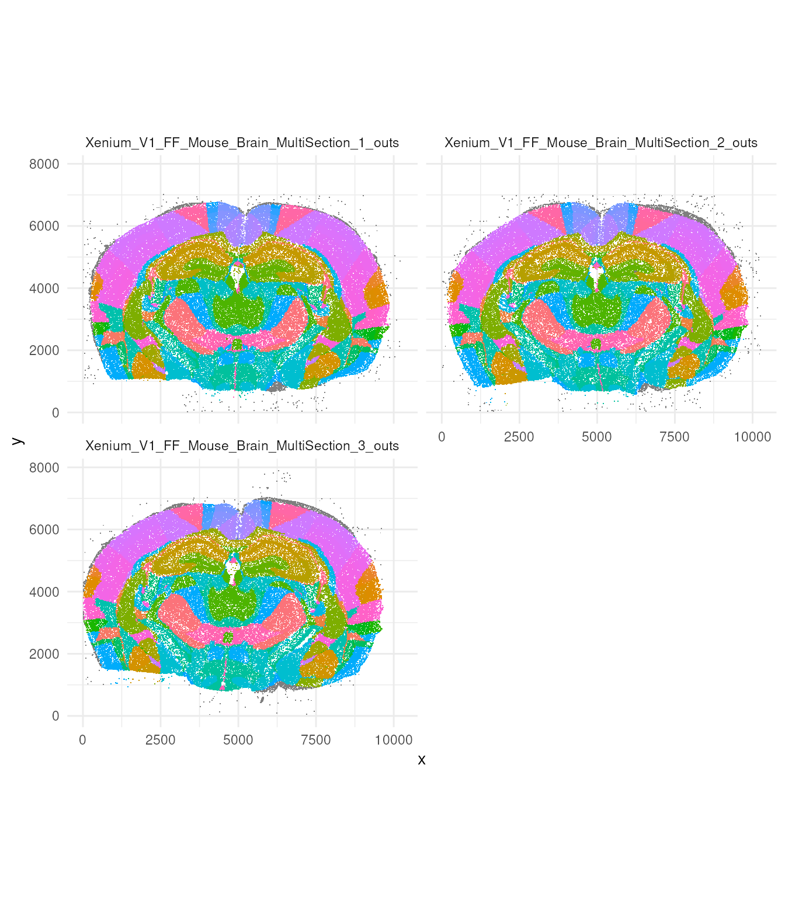
This dataset have been annotated for regions. Let’s have a look how many regions have been annotated
tx_small |>
distinct(region)## # A tibble: 146 × 1
## region
## <chr>
## 1 NA
## 2 fiber tracts
## 3 LZ
## 4 TEa5
## 5 CTXsp
## 6 VPM
## 7 SSp-bfd5
## 8 cc
## 9 ENTl5
## 10 SSp
## # ℹ 136 more rowsFrom this large dataset, we select a small reagion for illustrative purposes
Load the pre-saved data
The R package MoleculeExperiment includes functions to create and manipulate objects from the newly introduced MoleculeExperiment class, designed for analyzing molecule-based spatial transcriptomics data from platforms such as Xenium by 10X, CosMx SMI by Nanostring, and Merscope by Vizgen, among others.
Although in this session we will not use
MoleculeExperiment class, because of the lack of
segmentation boundary information (we rather have cell identifiers), we
briefly introduce this package because as an important part of
Bioconductor.
We show how we would import our table of probe location into a
MoleculeExperiment. At the end of the Session, for
knowledge, we will navigate the example code given in the vignette
material.
library(MoleculeExperiment)
repoDir = system.file("extdata", package = "MoleculeExperiment")
repoDir = paste0(repoDir, "/xenium_V1_FF_Mouse_Brain")
me = readXenium(repoDir, keepCols = "essential")
me## MoleculeExperiment class
##
## molecules slot (1): detected
## - detected:
## samples (2): sample1 sample2
## -- sample1:
## ---- features (137): 2010300C02Rik Acsbg1 ... Zfp536 Zfpm2
## ---- molecules (962)
## ---- location range: [4900,4919.98] x [6400.02,6420]
## -- sample2:
## ---- features (143): 2010300C02Rik Acsbg1 ... Zfp536 Zfpm2
## ---- molecules (777)
## ---- location range: [4900.01,4919.98] x [6400.16,6419.97]
##
##
## boundaries slot (1): cell
## - cell:
## samples (2): sample1 sample2
## -- sample1:
## ---- segments (5): 67500 67512 67515 67521 67527
## -- sample2:
## ---- segments (9): 65043 65044 ... 65070 65071In this object, besides the single molecule location, we have cell segmentation boundaries. We can use these boudaries to understand subcellular localisation of molecules and to aggregate molecules in cells.
ggplot_me() +
geom_polygon_me(me, assayName = "cell", fill = "#F8DE7E", color="grey") +
geom_point_me(me) +
# zoom in to selected patch area
coord_cartesian(
xlim = c(4900, 4919.98),
ylim = c(6400.02, 6420)
)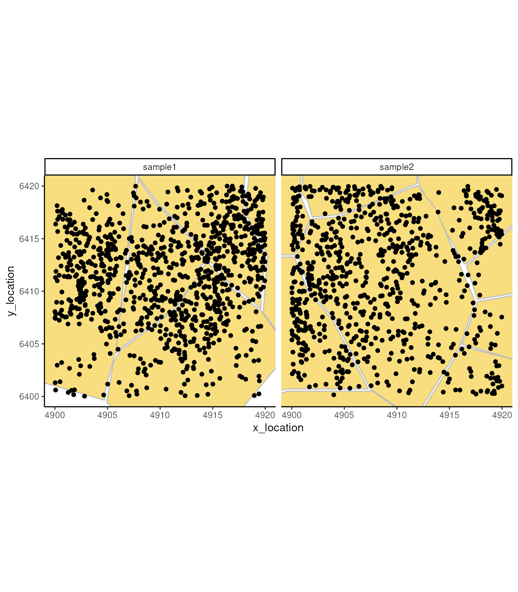
In this object we don’t only have the cell segmentation but the nucleous segmentation as well.
boundaries(me, "nucleus") = readBoundaries(
dataDir = repoDir,
pattern = "nucleus_boundaries.csv",
segmentIDCol = "cell_id",
xCol = "vertex_x",
yCol = "vertex_y",
keepCols = "essential",
boundariesAssay = "nucleus",
scaleFactorVector = 1
)
boundaries(me, "cell")## $cell
## $cell$sample1
## $cell$sample1$`67500`
## # A tibble: 13 × 2
## x_location y_location
## <dbl> <dbl>
## 1 4905. 6400.
## 2 4899. 6401.
## 3 4894. 6408.
## 4 4890. 6418.
## 5 4887. 6423.
## 6 4887. 6425.
## 7 4890. 6427.
## 8 4891. 6427.
## 9 4894. 6426.
## 10 4908. 6421.
## 11 4906. 6404.
## 12 4905. 6400.
## 13 4905. 6400.
##
## $cell$sample1$`67512`
## # A tibble: 13 × 2
## x_location y_location
## <dbl> <dbl>
## 1 4906. 6404.
## 2 4906. 6408.
## 3 4907. 6412.
## 4 4907. 6415.
## 5 4908. 6421.
## 6 4910. 6418.
## 7 4914. 6414.
## 8 4914. 6413.
## 9 4914. 6412.
## 10 4914. 6412.
## 11 4911. 6408.
## 12 4906. 6405.
## 13 4906. 6404.
##
## $cell$sample1$`67515`
## # A tibble: 13 × 2
## x_location y_location
## <dbl> <dbl>
## 1 4909. 6396.
## 2 4905. 6399.
## 3 4906. 6403.
## 4 4906. 6404.
## 5 4912. 6408.
## 6 4914. 6413.
## 7 4917. 6410.
## 8 4920. 6408.
## 9 4922. 6404.
## 10 4916. 6397.
## 11 4913. 6396.
## 12 4910. 6396.
## 13 4909. 6396.
##
## $cell$sample1$`67521`
## # A tibble: 13 × 2
## x_location y_location
## <dbl> <dbl>
## 1 4920. 6408.
## 2 4916. 6411.
## 3 4916. 6412.
## 4 4914. 6413.
## 5 4914. 6414.
## 6 4910. 6418.
## 7 4908. 6421.
## 8 4919. 6428.
## 9 4918. 6422.
## 10 4918. 6418.
## 11 4920. 6413.
## 12 4920. 6410.
## 13 4920. 6408.
##
## $cell$sample1$`67527`
## # A tibble: 13 × 2
## x_location y_location
## <dbl> <dbl>
## 1 4922. 6405.
## 2 4920. 6408.
## 3 4920. 6413.
## 4 4918. 6418.
## 5 4919. 6428.
## 6 4922. 6432.
## 7 4927. 6430.
## 8 4927. 6414.
## 9 4929. 6409.
## 10 4929. 6408.
## 11 4928. 6408.
## 12 4923. 6405.
## 13 4922. 6405.
##
##
## $cell$sample2
## $cell$sample2$`65043`
## # A tibble: 13 × 2
## x_location y_location
## <dbl> <dbl>
## 1 4897. 6413.
## 2 4895. 6414.
## 3 4894. 6418.
## 4 4892. 6421.
## 5 4886. 6423.
## 6 4888. 6426.
## 7 4897. 6430.
## 8 4904. 6429.
## 9 4901. 6425.
## 10 4901. 6419.
## 11 4902. 6417.
## 12 4900. 6413.
## 13 4897. 6413.
##
## $cell$sample2$`65044`
## # A tibble: 13 × 2
## x_location y_location
## <dbl> <dbl>
## 1 4902. 6417.
## 2 4902. 6419.
## 3 4901. 6419.
## 4 4901. 6423.
## 5 4902. 6425.
## 6 4905. 6429.
## 7 4910. 6431.
## 8 4912. 6424.
## 9 4912. 6420.
## 10 4907. 6418.
## 11 4904. 6417.
## 12 4902. 6417.
## 13 4902. 6417.
##
## $cell$sample2$`65051`
## # A tibble: 13 × 2
## x_location y_location
## <dbl> <dbl>
## 1 4916. 6413.
## 2 4912. 6420.
## 3 4910. 6431.
## 4 4914. 6439.
## 5 4919. 6444.
## 6 4924. 6443.
## 7 4928. 6442.
## 8 4934. 6437.
## 9 4938. 6429.
## 10 4939. 6424.
## 11 4922. 6417.
## 12 4917. 6413.
## 13 4916. 6413.
##
## $cell$sample2$`65055`
## # A tibble: 13 × 2
## x_location y_location
## <dbl> <dbl>
## 1 4912. 6398.
## 2 4907. 6401.
## 3 4904. 6407.
## 4 4902. 6410.
## 5 4900. 6414.
## 6 4902. 6417.
## 7 4904. 6417.
## 8 4912. 6420.
## 9 4914. 6418.
## 10 4917. 6409
## 11 4916. 6405.
## 12 4912. 6398.
## 13 4912. 6398.
##
## $cell$sample2$`65063`
## # A tibble: 13 × 2
## x_location y_location
## <dbl> <dbl>
## 1 4930. 6408.
## 2 4925. 6410.
## 3 4921. 6410.
## 4 4918. 6409.
## 5 4917. 6412.
## 6 4922. 6417.
## 7 4927. 6419.
## 8 4931. 6421.
## 9 4939. 6423.
## 10 4939. 6423.
## 11 4938. 6422.
## 12 4930. 6408.
## 13 4930. 6408.
##
## $cell$sample2$`65064`
## # A tibble: 13 × 2
## x_location y_location
## <dbl> <dbl>
## 1 4891. 6399.
## 2 4888. 6400.
## 3 4888. 6410.
## 4 4892. 6411.
## 5 4895. 6414.
## 6 4897. 6413.
## 7 4900. 6413.
## 8 4902. 6410.
## 9 4904. 6407.
## 10 4907. 6401.
## 11 4900. 6401.
## 12 4893. 6399.
## 13 4891. 6399.
##
## $cell$sample2$`65067`
## # A tibble: 13 × 2
## x_location y_location
## <dbl> <dbl>
## 1 4925. 6403.
## 2 4924. 6403.
## 3 4922. 6403.
## 4 4921. 6403.
## 5 4916. 6405.
## 6 4918. 6409
## 7 4921. 6410.
## 8 4925. 6410.
## 9 4927. 6409.
## 10 4930. 6408.
## 11 4930. 6408.
## 12 4925. 6403.
## 13 4925. 6403.
##
## $cell$sample2$`65070`
## # A tibble: 13 × 2
## x_location y_location
## <dbl> <dbl>
## 1 4901. 6389.
## 2 4899. 6391.
## 3 4899. 6392.
## 4 4896. 6395.
## 5 4892. 6399.
## 6 4897. 6400.
## 7 4900. 6400.
## 8 4908. 6400.
## 9 4911. 6398.
## 10 4912. 6397.
## 11 4909. 6390.
## 12 4902. 6389.
## 13 4901. 6389.
##
## $cell$sample2$`65071`
## # A tibble: 13 × 2
## x_location y_location
## <dbl> <dbl>
## 1 4924. 6394.
## 2 4922. 6395.
## 3 4917. 6396.
## 4 4912. 6397.
## 5 4912. 6398.
## 6 4916. 6405.
## 7 4922. 6403.
## 8 4923. 6403.
## 9 4925. 6402.
## 10 4925. 6401.
## 11 4925. 6400.
## 12 4925. 6394.
## 13 4924. 6394.
showMolecules(me)## List of 1
## $ detected:List of 2
## ..$ sample1:List of 137
## .. ..$ 2010300C02Rik : tibble [11 × 2] (S3: tbl_df/tbl/data.frame)
## .. ..$ Acsbg1 : tibble [6 × 2] (S3: tbl_df/tbl/data.frame)
## .. .. [list output truncated]
## ..$ sample2:List of 143
## .. ..$ 2010300C02Rik: tibble [9 × 2] (S3: tbl_df/tbl/data.frame)
## .. ..$ Acsbg1 : tibble [10 × 2] (S3: tbl_df/tbl/data.frame)
## .. .. [list output truncated]
bds_colours = setNames(
c("#aa0000ff", "#ffaaffff"),
c("Region 1", "Region 2")
)
ggplot_me() +
# add cell segments and colour by cell id
geom_polygon_me(me, byFill = "segment_id", colour = "black", alpha = 0.1) +
# add molecule points and colour by feature name
geom_point_me(me, byColour = "feature_id", size = 0.1) +
# add nuclei segments and colour the border with red
geom_polygon_me(me, assayName = "nucleus", fill = NA, colour = "red") +
# zoom in to selected patch area
coord_cartesian(xlim = c(4900, 4919.98), ylim = c(6400.02, 6420))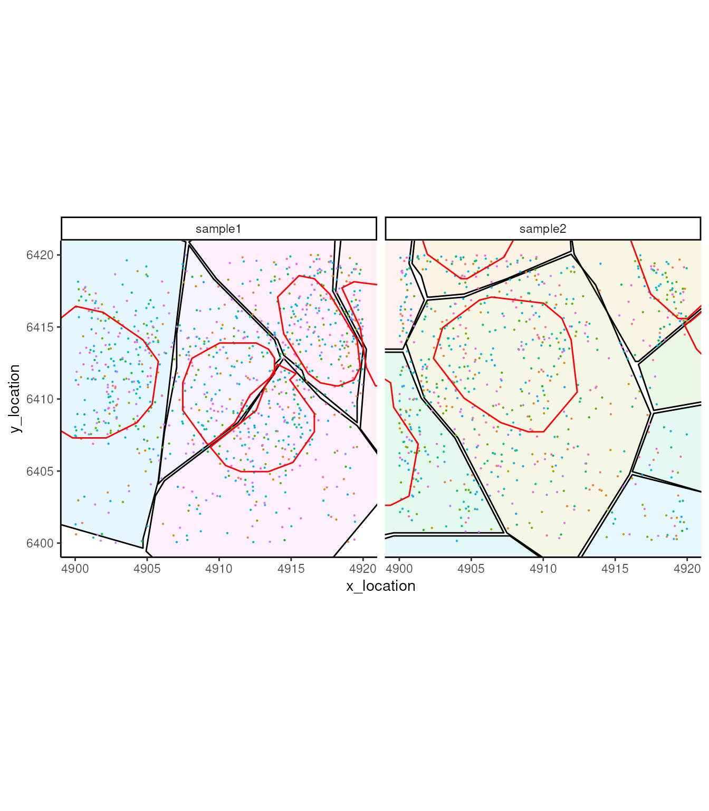
## used (Mb) gc trigger (Mb) max used (Mb)
## Ncells 10494841 560.5 16692141 891.5 16692141 891.5
## Vcells 44349760 338.4 71488748 545.5 50279372 383.7We can organise our large data frame containing single molecules into
a more efficient MoleculeExperiment.
library(MoleculeExperiment)
tx_small_me =
tx_small |>
select(sample_id, gene, x, y) |>
dataframeToMEList(
dfType = "molecules",
assayName = "detected",
sampleCol = "sample_id",
factorCol = "gene",
xCol = "x",
yCol = "y"
) |>
MoleculeExperiment()
tx_small_me## MoleculeExperiment class
##
## molecules slot (1): detected
## - detected:
## samples (3): Xenium_V1_FF_Mouse_Brain_MultiSection_1_outs
## Xenium_V1_FF_Mouse_Brain_MultiSection_2_outs
## Xenium_V1_FF_Mouse_Brain_MultiSection_3_outs
## -- Xenium_V1_FF_Mouse_Brain_MultiSection_1_outs:
## ---- features (496): 2010300C02Rik Acsbg1 ... Zfp536 Zfpm2
## ---- molecules (125531)
## ---- location range: [20,10197.56] x [31.25,7021.59]
## -- Xenium_V1_FF_Mouse_Brain_MultiSection_2_outs:
## ---- features (483): 2010300C02Rik Acsbg1 ... Zfp536 Zfpm2
## ---- molecules (116929)
## ---- location range: [28.65,10256.49] x [43.5,7012.21]
## -- Xenium_V1_FF_Mouse_Brain_MultiSection_3_outs:
## ---- features (488): 2010300C02Rik Acsbg1 ... Zfp536 Zfpm2
## ---- molecules (119310)
## ---- location range: [10.6,9656.13] x [45.85,7884.78]
##
##
## boundaries slot: NULLHere, we can appreciate the difference in size between the redundant data frame
tx_small |>
object.size() |>
format(units = "auto")## [1] "69.1 Mb"and the MoleculeExperiment.
tx_small_me |>
object.size() |>
format(units = "auto")## [1] "7 Mb"## used (Mb) gc trigger (Mb) max used (Mb)
## Ncells 10496776 560.6 16692141 891.5 16692141 891.5
## Vcells 35310269 269.4 71488748 545.5 62678736 478.3Now let’s try to visualise just a small section. You can appreciate, coloured by cell, single molecules. You cqn also appreciate the difference in density between regions. An aspect to note, is that not all probes are withiin cells. This depends on the segmentation process.
brewer.pal(7, "Set1")## [1] "#E41A1C" "#377EB8" "#4DAF4A" "#984EA3" "#FF7F00" "#FFFF33" "#A65628"
tx_small_region |>
filter(!is.na(cell)) |>
slice_sample(prop = 0.3) |>
ggplot(aes(x, y, colour = factor(cell))) +
geom_point(shape=".") +
facet_wrap(~sample_id, ncol = 2) +
scale_color_manual(values = sample(colorRampPalette(brewer.pal(8, "Set2"))(1800))) +
coord_fixed() +
theme_minimal() +
theme(legend.position = "none")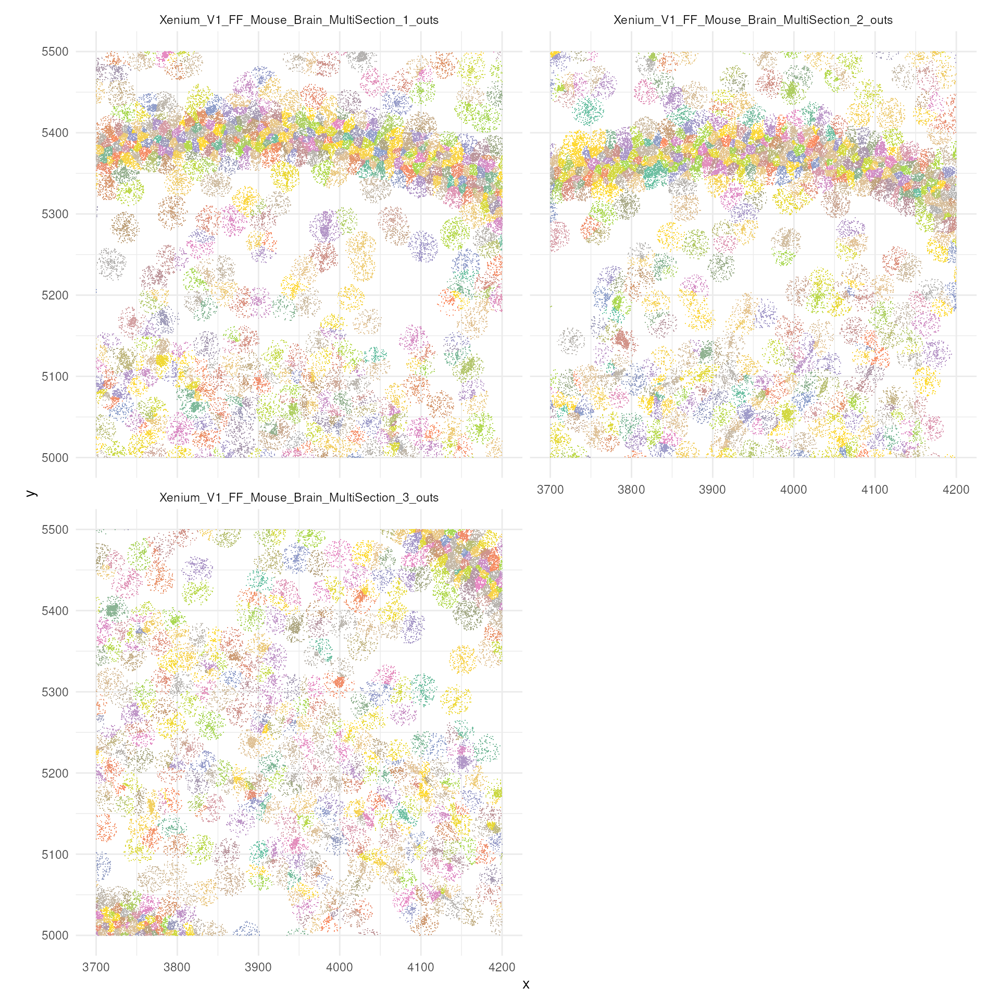
Let’s have a look to the probes that have not being unassigned to cells.
tx_small_region |>
filter(is.na(cell)) |>
ggplot(aes(x, y, colour = factor(cell))) +
geom_point(shape=".") +
facet_wrap(~sample_id, ncol = 2) +
scale_color_manual(values = sample(colorRampPalette(brewer.pal(8, "Set2"))(1800))) +
coord_fixed() +
theme_minimal() +
theme(legend.position = "none")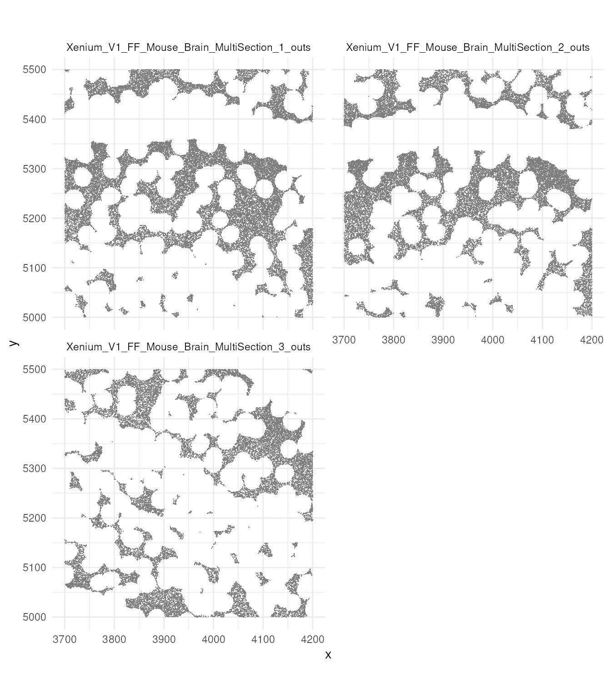
## used (Mb) gc trigger (Mb) max used (Mb)
## Ncells 10520285 561.9 16692141 891.5 16692141 891.5
## Vcells 20544664 156.8 71488748 545.5 71488741 545.5Exercise 3.1
We want to understand how much data we are discarding, that does not have a cell identity.
tidyverse
We will convert our cell by gene count to a
SpatialExperiment. This object stores a cell by gene matrix
with relative XY coordinates.
SubcellularSpatialData has a utility function that
aggregated the single molecules in cells, where these cell ID have been
identified with segmentation.
Keep just the annotated regions.
Let have a look to the SpatialExperiment.
tx_spe## # A SpatialExperiment-tibble abstraction: 467,131 × 8
## # Features = 541 | Cells = 467131 | Assays = counts
## .cell sample_id cell_id transcript_id qv region x y
## <chr> <fct> <fct> <dbl> <dbl> <fct> <dbl> <dbl>
## 1 Xenium_V1_FF_Mouse_… 1 1 2.82e14 31.4 CP 1557. 2529.
## 2 Xenium_V1_FF_Mouse_… 1 10 2.82e14 32.2 CP 1631. 2543.
## 3 Xenium_V1_FF_Mouse_… 1 100 2.82e14 30.7 Isoco… 834. 3109.
## 4 Xenium_V1_FF_Mouse_… 1 1000 2.82e14 31.4 RSPv5 4932. 5720.
## 5 Xenium_V1_FF_Mouse_… 1 10000 2.82e14 31.5 LA 1667. 2159.
## 6 Xenium_V1_FF_Mouse_… 1 100000 2.82e14 33.6 VISa1 3558. 6587.
## 7 Xenium_V1_FF_Mouse_… 1 100001 2.82e14 31.7 VISa1 3570. 6583.
## 8 Xenium_V1_FF_Mouse_… 1 100002 2.82e14 33.9 SSp 3430. 6157.
## 9 Xenium_V1_FF_Mouse_… 1 100003 2.82e14 32.5 SSp 3431. 6120.
## 10 Xenium_V1_FF_Mouse_… 1 100004 2.82e14 33.5 SSp 3436. 6140.
## # ℹ 467,121 more rowsA trivial edit to work with ggspavis.
tx_spe = tx_spe |> mutate(in_tissue = TRUE) Let’s have a look to our SpatialExperiment.
tx_spe## # A SpatialExperiment-tibble abstraction: 467,131 × 9
## # Features = 541 | Cells = 467131 | Assays = counts
## .cell sample_id cell_id transcript_id qv region in_tissue x y
## <chr> <fct> <fct> <dbl> <dbl> <fct> <lgl> <dbl> <dbl>
## 1 Xenium_V1… 1 1 2.82e14 31.4 CP TRUE 1557. 2529.
## 2 Xenium_V1… 1 10 2.82e14 32.2 CP TRUE 1631. 2543.
## 3 Xenium_V1… 1 100 2.82e14 30.7 Isoco… TRUE 834. 3109.
## 4 Xenium_V1… 1 1000 2.82e14 31.4 RSPv5 TRUE 4932. 5720.
## 5 Xenium_V1… 1 10000 2.82e14 31.5 LA TRUE 1667. 2159.
## 6 Xenium_V1… 1 100000 2.82e14 33.6 VISa1 TRUE 3558. 6587.
## 7 Xenium_V1… 1 100001 2.82e14 31.7 VISa1 TRUE 3570. 6583.
## 8 Xenium_V1… 1 100002 2.82e14 33.9 SSp TRUE 3430. 6157.
## 9 Xenium_V1… 1 100003 2.82e14 32.5 SSp TRUE 3431. 6120.
## 10 Xenium_V1… 1 100004 2.82e14 33.5 SSp TRUE 3436. 6140.
## # ℹ 467,121 more rowsLet’s have a look at how many cells have been detected for each region
tx_spe |>
add_count(region) |>
ggplot(aes(fct_reorder(region, n, .desc = TRUE))) +
geom_bar() +
theme_bw() +
theme(axis.text.x = element_text(angle=90, hjust=1, size = 2))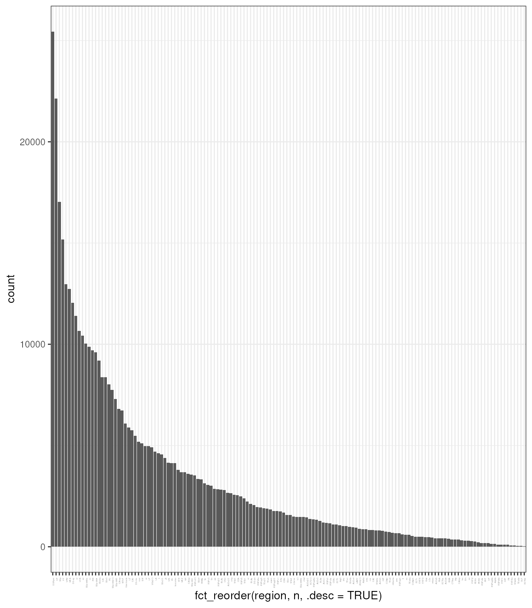
We normalise the SpatialExperiment using
scater.
tx_spe =
tx_spe |>
# Scaling and tranformation
scater::logNormCounts() We then visualise what is the relationship between variance and total expression across cells.
tx_spe |>
# Gene variance
scran::modelGeneVar(block = tx_spe$sample_id) |>
# Reformat for plotting
as_tibble(rownames = "feature") |>
# Plot
ggplot(aes(mean, total)) +
geom_point() +
geom_smooth(color="red")+
xlab("Mean log-expression") +
ylab("Variance") +
theme_bw()## `geom_smooth()` using method = 'loess' and formula = 'y ~ x'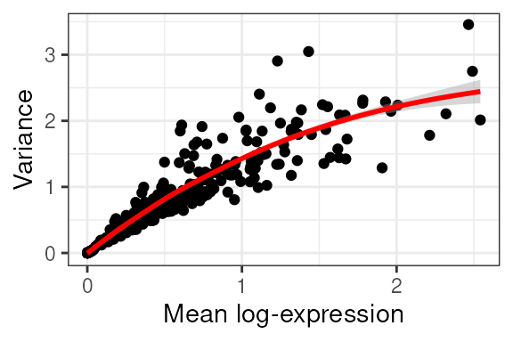
For further analysis, we subset the dataset to allow quicker calculations.
tx_spe_sample_1 =
tx_spe |>
filter(sample_id=="1") |>
slice_sample(prop = 0.2)As we have done previously, we calculate variable informative genes, for further analyses.
genes <- !grepl(pattern = "NegControl.+|BLANK.+", x = rownames(tx_spe_sample_1))
# Get the top 2000 genes.
top.hvgs =
tx_spe_sample_1 |>
scran::modelGeneVar(subset.row = genes) |>
# Model gene variance and select variable genes per sample
getTopHVGs(n=200)
top.hvgs## [1] "Gjc3" "Gfap" "Opalin" "Igf2"
## [5] "Slc17a6" "Slc17a7" "Sox10" "Neurod6"
## [9] "Calb2" "Ly6a" "Cldn5" "Gad1"
## [13] "Fn1" "Gad2" "Lamp5" "Penk"
## [17] "Pdgfra" "Cabp7" "Prox1" "Dcn"
## [21] "Nr2f2" "Aqp4" "Pvalb" "Arc"
## [25] "Laptm5" "Adgrl4" "Slc13a4" "Rims3"
## [29] "Vat1l" "Calb1" "Bhlhe22" "Cspg4"
## [33] "Pecam1" "Nwd2" "Dkk3" "Meis2"
## [37] "Gpr17" "Aldh1a2" "Necab1" "Cd24a"
## [41] "Epha4" "Rprm" "Car4" "Nrn1"
## [45] "Siglech" "Ccn2" "Acta2" "Fmod"
## [49] "Kdr" "Ntsr2" "Spp1" "Acsbg1"
## [53] "2010300C02Rik" "Trem2" "Igfbp4" "Tmem163"
## [57] "Col1a1" "Satb2" "Col6a1" "Spag16"
## [61] "Rab3b" "Nxph3" "Slc39a12" "Cd53"
## [65] "Emcn" "Acvrl1" "Rasgrf2" "Nts"
## [69] "Cplx3" "Gjb2" "Hs3st2" "Cd93"
## [73] "Cbln4" "Plcxd3" "Bcl11b" "Pdyn"
## [77] "Carmn" "Syt6" "Cpne4" "Foxp2"
## [81] "Fezf2" "Clmn" "Cobll1" "Myl4"
## [85] "Sox17" "Cyp1b1" "Sncg" "Bdnf"
## [89] "Necab2" "Sst" "Nell1" "Paqr5"
## [93] "Pln" "Cpne6" "Unc13c" "Pglyrp1"
## [97] "Vip" "Cbln1" "Rnf152" "Ebf3"
## [101] "Ano1" "Hapln1" "Igfbp6" "Sema3d"
## [105] "Sema3e" "Zfp536" "Rmst" "Cdh13"
## [109] "Tmem255a" "Cd300c2" "Adamtsl1" "Ikzf1"
## [113] "Pou3f1" "Crh" "Prdm8" "Rxfp1"The selected subset of genes can then be passed to the subset.row argument (or equivalent) in downstream steps.
tx_spe_sample_1 =
tx_spe_sample_1 |>
fixedPCA( subset.row=top.hvgs )We then use the gene expression to cluster sales based on their similarity and represent these clusters in a two dimensional embeddings (UMAP)
Louvain clustering is a popular method used in single-cell RNA sequencing (scRNA-seq) data analysis to identify groups of cells with similar gene expression profiles. This method is based on the Louvain algorithm, which is widely used for detecting community structures in large networks.
The Louvain algorithm is designed to maximize a metric known as modularity, which measures the density of edges inside communities compared to edges outside communities.
It operates in two phases:
cluster_labels =
tx_spe_sample_1 |>
scran::clusterCells(
use.dimred="PCA",
BLUSPARAM=bluster::NNGraphParam(k=20, cluster.fun="louvain")
) |>
as.character()
cluster_labels |>
head()## [1] "1" "2" "3" "2" "4" "5"Now we add this cluster column to our
SpatialExperiment
tx_spe_sample_1 =
tx_spe_sample_1 |>
mutate(clusters = cluster_labels)
tx_spe_sample_1 |> select(.cell, clusters)## # A SpatialExperiment-tibble abstraction: 31,938 × 10
## # Features = 541 | Cells = 31938 | Assays = counts, logcounts
## .cell clusters sample_id x y PC1 PC2 PC3 PC4 PC5
## <chr> <chr> <fct> <dbl> <dbl> <dbl> <dbl> <dbl> <dbl> <dbl>
## 1 Xenium_V1_F… 1 1 2654. 5443. -2.30 0.426 -4.56 2.59 2.54
## 2 Xenium_V1_F… 2 1 7424. 4891. 7.97 0.783 -5.36 2.46 -0.397
## 3 Xenium_V1_F… 3 1 4546. 6732. 3.84 -5.78 1.65 -2.54 2.63
## 4 Xenium_V1_F… 2 1 2457. 3507. 9.59 -1.23 -3.60 -0.854 4.77
## 5 Xenium_V1_F… 4 1 9549. 2918. -6.51 0.629 -0.224 -1.54 1.67
## 6 Xenium_V1_F… 5 1 4503. 849. 5.80 -1.18 5.03 -0.503 -1.89
## 7 Xenium_V1_F… 6 1 4842. 4963. -5.59 -1.25 -2.43 1.78 1.61
## 8 Xenium_V1_F… 4 1 8846. 4544. -5.09 -3.93 3.33 2.35 2.66
## 9 Xenium_V1_F… 7 1 2550. 5421. -4.75 -1.96 -2.86 -1.23 0.419
## 10 Xenium_V1_F… 2 1 3460. 1581. 8.70 2.90 -4.57 1.56 -0.919
## # ℹ 31,928 more rowsAs we have done before, we caculate UMAPs for visualisation purposes.
This step takes long time.
## Check how many
tx_spe_sample_1 =
tx_spe_sample_1 |>
runUMAP() Now, let’s visualise the clusters in UMAP space.
tx_spe_sample_1 |>
plotUMAP(colour_by = "clusters") +
scale_color_discrete(
colorRampPalette(brewer.pal(9, "Set1"))(30)
)## Scale for colour is already present.
## Adding another scale for colour, which will replace the existing scale.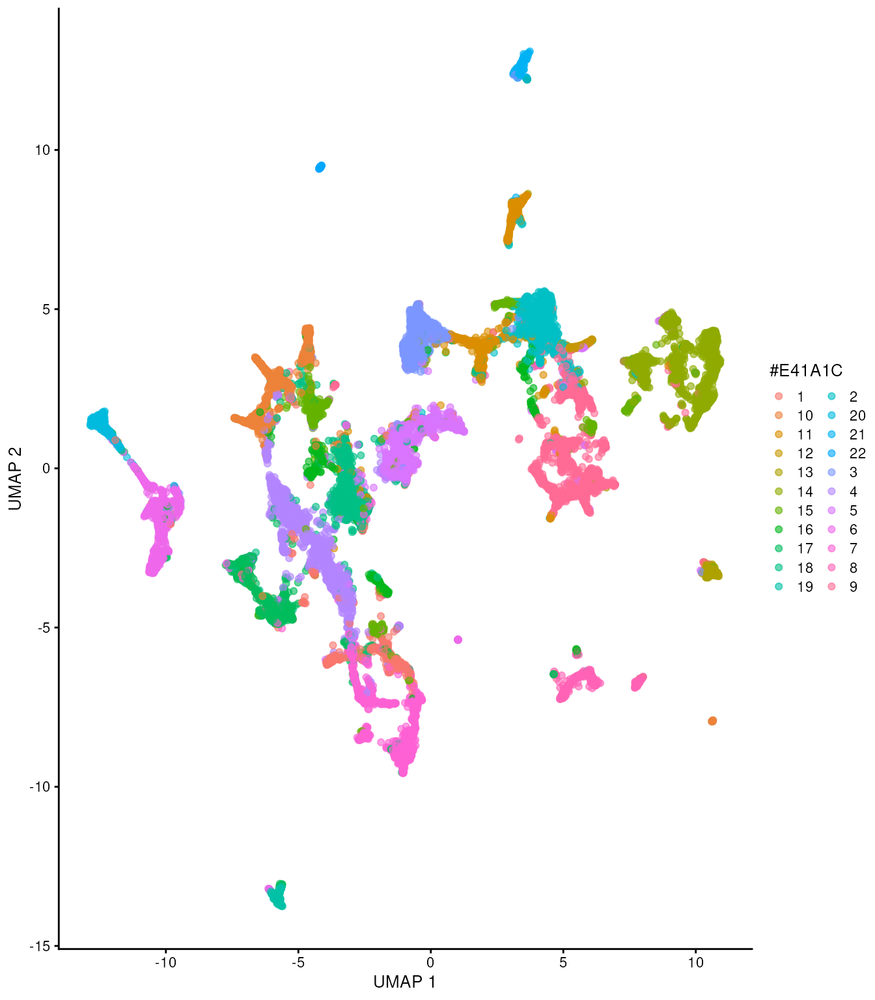
Exercise 3.2
Let’s try to understand the identity of these clusters performing gene marker detection.
In the previous sections we have seen how to do gene marker selection for sequencing-based spatial data. We just have to adapt it to our current scenario.
Score the markers (scran::scoreMarkers or tx_spe_sample_1)
Filter top markers (filter mean.AUC > 0.8)
Focus on Cluster 1 and try to guess the cell type (subset first element in the list, copy and paste the first 5 genes, and quickly look in public resources about what cell type those gene are markers of)
Plot the umap colouring by the top marker of cluster 1 (plotReducedDim())
Too understand whether the cell clusters explain morphology as opposed to merely cell identity, we can color cells according to annotated region. As we can see we have a lot of regions. We have more regions that cell clusters.
tx_spe_sample_1 |>
plotUMAP(colour_by = "region") +
scale_color_discrete(
brewer.pal(n = 30, name = "Set1")
) +
guides(color="none")## Warning in brewer.pal(n = 30, name = "Set1"): n too large, allowed maximum for palette Set1 is 9
## Returning the palette you asked for with that many colors## Scale for colour is already present.
## Adding another scale for colour, which will replace the existing scale.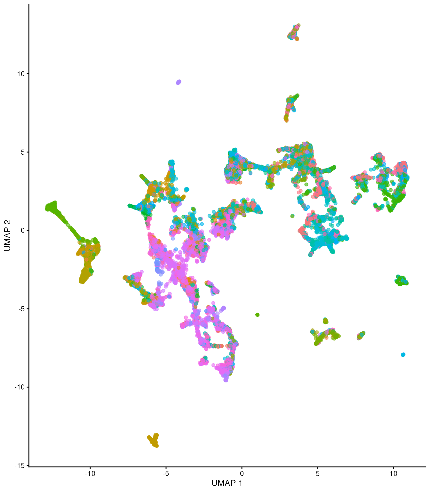
Let’s try to understand the morphological distribution of cell clusters in space.
Plot ground truth in tissue map.
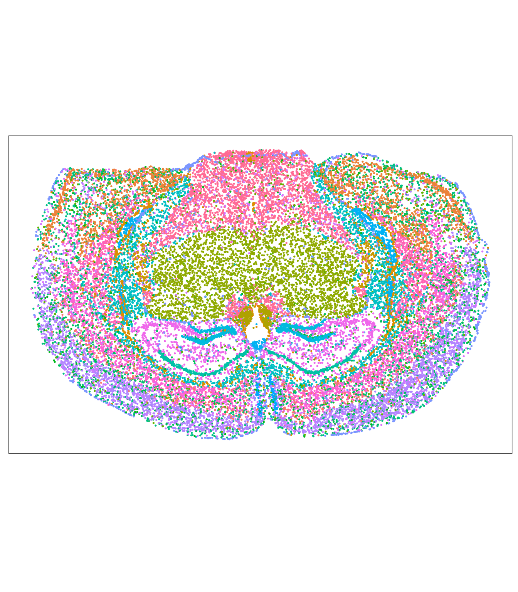
# For comparison the annotated regions
tx_spe_sample_1 |>
ggspavis::plotSpots(annotate = "region") +
scale_color_manual(values = colorRampPalette( brewer.pal(9,"Set1") )(150) ) +
guides(color = "none")## Scale for colour is already present.
## Adding another scale for colour, which will replace the existing scale.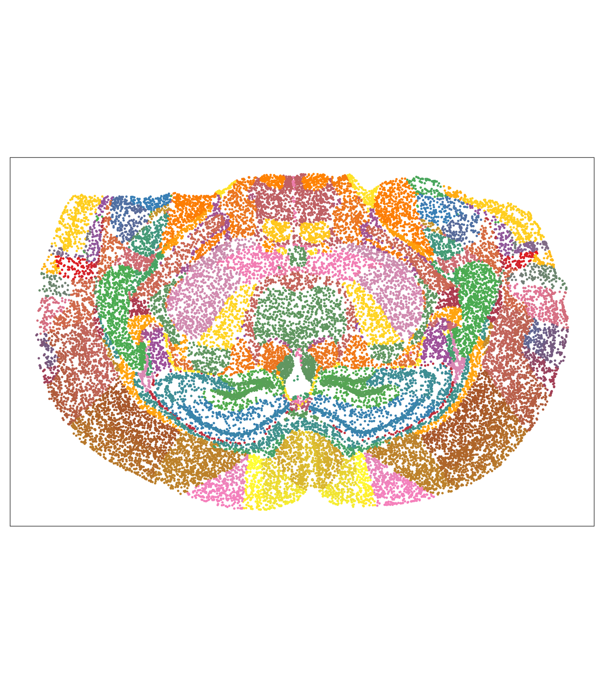
Exercise 3.3
Spatial-aware clustering: Apply the spatial aware clustering method BANKSY. Taking as example the code run for session 2.
hoodscanR Liu et al., 2025
Algorithm:
Nearest cells detection by Approximate Nearest Neighbor (ANN) search algorithm
Calculating euclidean distance matrix between cells and their k-nearest neighbors
Cell-level annotations provided by users are used to construct a cell annotation matrix
Identify cellular neighborhoods uses the SoftMax function, enhanced by a “shape” parameter that governs the “influence radious”. This measures probability of a cell type to be found in a neighbour.
The K-means clustering algorithm finds recurring neighbours
In order to perform neighborhood scanning, we need to firstly identify k (in this example, k = 100) nearest cells for each cells. The searching algorithm is based on Approximate Near Neighbor (ANN) C++ library from the RANN package.
tx_spe_neighbours =
tx_spe_sample_1 |>
readHoodData(anno_col = "clusters") |>
findNearCells(k = 100)The output of findNearCells function includes two matrix, an annotation matrix and a distance matrix.
tx_spe_neighbours$cells[1:10, 1:5]## nearest_cell_1
## Xenium_V1_FF_Mouse_Brain_MultiSection_1_outs_125137 7
## Xenium_V1_FF_Mouse_Brain_MultiSection_1_outs_5000 11
## Xenium_V1_FF_Mouse_Brain_MultiSection_1_outs_67843 3
## Xenium_V1_FF_Mouse_Brain_MultiSection_1_outs_134051 3
## Xenium_V1_FF_Mouse_Brain_MultiSection_1_outs_93903 17
## Xenium_V1_FF_Mouse_Brain_MultiSection_1_outs_11074 9
## Xenium_V1_FF_Mouse_Brain_MultiSection_1_outs_44945 6
## Xenium_V1_FF_Mouse_Brain_MultiSection_1_outs_160596 4
## Xenium_V1_FF_Mouse_Brain_MultiSection_1_outs_125886 17
## Xenium_V1_FF_Mouse_Brain_MultiSection_1_outs_30417 2
## nearest_cell_2
## Xenium_V1_FF_Mouse_Brain_MultiSection_1_outs_125137 7
## Xenium_V1_FF_Mouse_Brain_MultiSection_1_outs_5000 2
## Xenium_V1_FF_Mouse_Brain_MultiSection_1_outs_67843 18
## Xenium_V1_FF_Mouse_Brain_MultiSection_1_outs_134051 2
## Xenium_V1_FF_Mouse_Brain_MultiSection_1_outs_93903 4
## Xenium_V1_FF_Mouse_Brain_MultiSection_1_outs_11074 9
## Xenium_V1_FF_Mouse_Brain_MultiSection_1_outs_44945 6
## Xenium_V1_FF_Mouse_Brain_MultiSection_1_outs_160596 4
## Xenium_V1_FF_Mouse_Brain_MultiSection_1_outs_125886 7
## Xenium_V1_FF_Mouse_Brain_MultiSection_1_outs_30417 2
## nearest_cell_3
## Xenium_V1_FF_Mouse_Brain_MultiSection_1_outs_125137 7
## Xenium_V1_FF_Mouse_Brain_MultiSection_1_outs_5000 2
## Xenium_V1_FF_Mouse_Brain_MultiSection_1_outs_67843 5
## Xenium_V1_FF_Mouse_Brain_MultiSection_1_outs_134051 2
## Xenium_V1_FF_Mouse_Brain_MultiSection_1_outs_93903 17
## Xenium_V1_FF_Mouse_Brain_MultiSection_1_outs_11074 9
## Xenium_V1_FF_Mouse_Brain_MultiSection_1_outs_44945 6
## Xenium_V1_FF_Mouse_Brain_MultiSection_1_outs_160596 4
## Xenium_V1_FF_Mouse_Brain_MultiSection_1_outs_125886 18
## Xenium_V1_FF_Mouse_Brain_MultiSection_1_outs_30417 5
## nearest_cell_4
## Xenium_V1_FF_Mouse_Brain_MultiSection_1_outs_125137 7
## Xenium_V1_FF_Mouse_Brain_MultiSection_1_outs_5000 11
## Xenium_V1_FF_Mouse_Brain_MultiSection_1_outs_67843 18
## Xenium_V1_FF_Mouse_Brain_MultiSection_1_outs_134051 3
## Xenium_V1_FF_Mouse_Brain_MultiSection_1_outs_93903 16
## Xenium_V1_FF_Mouse_Brain_MultiSection_1_outs_11074 9
## Xenium_V1_FF_Mouse_Brain_MultiSection_1_outs_44945 6
## Xenium_V1_FF_Mouse_Brain_MultiSection_1_outs_160596 5
## Xenium_V1_FF_Mouse_Brain_MultiSection_1_outs_125886 18
## Xenium_V1_FF_Mouse_Brain_MultiSection_1_outs_30417 2
## nearest_cell_5
## Xenium_V1_FF_Mouse_Brain_MultiSection_1_outs_125137 7
## Xenium_V1_FF_Mouse_Brain_MultiSection_1_outs_5000 11
## Xenium_V1_FF_Mouse_Brain_MultiSection_1_outs_67843 18
## Xenium_V1_FF_Mouse_Brain_MultiSection_1_outs_134051 2
## Xenium_V1_FF_Mouse_Brain_MultiSection_1_outs_93903 17
## Xenium_V1_FF_Mouse_Brain_MultiSection_1_outs_11074 9
## Xenium_V1_FF_Mouse_Brain_MultiSection_1_outs_44945 5
## Xenium_V1_FF_Mouse_Brain_MultiSection_1_outs_160596 4
## Xenium_V1_FF_Mouse_Brain_MultiSection_1_outs_125886 7
## Xenium_V1_FF_Mouse_Brain_MultiSection_1_outs_30417 5
tx_spe_neighbours$distance[1:10, 1:5]## nearest_cell_1
## Xenium_V1_FF_Mouse_Brain_MultiSection_1_outs_125137 10.636020
## Xenium_V1_FF_Mouse_Brain_MultiSection_1_outs_5000 18.980486
## Xenium_V1_FF_Mouse_Brain_MultiSection_1_outs_67843 20.381328
## Xenium_V1_FF_Mouse_Brain_MultiSection_1_outs_134051 7.813594
## Xenium_V1_FF_Mouse_Brain_MultiSection_1_outs_93903 17.392480
## Xenium_V1_FF_Mouse_Brain_MultiSection_1_outs_11074 7.308417
## Xenium_V1_FF_Mouse_Brain_MultiSection_1_outs_44945 5.574668
## Xenium_V1_FF_Mouse_Brain_MultiSection_1_outs_160596 27.894962
## Xenium_V1_FF_Mouse_Brain_MultiSection_1_outs_125886 4.771525
## Xenium_V1_FF_Mouse_Brain_MultiSection_1_outs_30417 27.531016
## nearest_cell_2
## Xenium_V1_FF_Mouse_Brain_MultiSection_1_outs_125137 16.03346
## Xenium_V1_FF_Mouse_Brain_MultiSection_1_outs_5000 26.50415
## Xenium_V1_FF_Mouse_Brain_MultiSection_1_outs_67843 61.06224
## Xenium_V1_FF_Mouse_Brain_MultiSection_1_outs_134051 16.57091
## Xenium_V1_FF_Mouse_Brain_MultiSection_1_outs_93903 37.05774
## Xenium_V1_FF_Mouse_Brain_MultiSection_1_outs_11074 21.16388
## Xenium_V1_FF_Mouse_Brain_MultiSection_1_outs_44945 13.14604
## Xenium_V1_FF_Mouse_Brain_MultiSection_1_outs_160596 27.97610
## Xenium_V1_FF_Mouse_Brain_MultiSection_1_outs_125886 12.19702
## Xenium_V1_FF_Mouse_Brain_MultiSection_1_outs_30417 43.83097
## nearest_cell_3
## Xenium_V1_FF_Mouse_Brain_MultiSection_1_outs_125137 17.62846
## Xenium_V1_FF_Mouse_Brain_MultiSection_1_outs_5000 37.02751
## Xenium_V1_FF_Mouse_Brain_MultiSection_1_outs_67843 64.75963
## Xenium_V1_FF_Mouse_Brain_MultiSection_1_outs_134051 18.86735
## Xenium_V1_FF_Mouse_Brain_MultiSection_1_outs_93903 38.10298
## Xenium_V1_FF_Mouse_Brain_MultiSection_1_outs_11074 23.60042
## Xenium_V1_FF_Mouse_Brain_MultiSection_1_outs_44945 23.03270
## Xenium_V1_FF_Mouse_Brain_MultiSection_1_outs_160596 29.70256
## Xenium_V1_FF_Mouse_Brain_MultiSection_1_outs_125886 28.11866
## Xenium_V1_FF_Mouse_Brain_MultiSection_1_outs_30417 58.83107
## nearest_cell_4
## Xenium_V1_FF_Mouse_Brain_MultiSection_1_outs_125137 21.01371
## Xenium_V1_FF_Mouse_Brain_MultiSection_1_outs_5000 43.79288
## Xenium_V1_FF_Mouse_Brain_MultiSection_1_outs_67843 76.82176
## Xenium_V1_FF_Mouse_Brain_MultiSection_1_outs_134051 20.45972
## Xenium_V1_FF_Mouse_Brain_MultiSection_1_outs_93903 38.61139
## Xenium_V1_FF_Mouse_Brain_MultiSection_1_outs_11074 24.40380
## Xenium_V1_FF_Mouse_Brain_MultiSection_1_outs_44945 28.81275
## Xenium_V1_FF_Mouse_Brain_MultiSection_1_outs_160596 33.14110
## Xenium_V1_FF_Mouse_Brain_MultiSection_1_outs_125886 29.87747
## Xenium_V1_FF_Mouse_Brain_MultiSection_1_outs_30417 62.99010
## nearest_cell_5
## Xenium_V1_FF_Mouse_Brain_MultiSection_1_outs_125137 22.50057
## Xenium_V1_FF_Mouse_Brain_MultiSection_1_outs_5000 50.73116
## Xenium_V1_FF_Mouse_Brain_MultiSection_1_outs_67843 86.15656
## Xenium_V1_FF_Mouse_Brain_MultiSection_1_outs_134051 25.11060
## Xenium_V1_FF_Mouse_Brain_MultiSection_1_outs_93903 42.70578
## Xenium_V1_FF_Mouse_Brain_MultiSection_1_outs_11074 26.60460
## Xenium_V1_FF_Mouse_Brain_MultiSection_1_outs_44945 29.20076
## Xenium_V1_FF_Mouse_Brain_MultiSection_1_outs_160596 41.84619
## Xenium_V1_FF_Mouse_Brain_MultiSection_1_outs_125886 31.78266
## Xenium_V1_FF_Mouse_Brain_MultiSection_1_outs_30417 65.01012We can then perform neighborhood analysis using the function scanHoods. This function incldue the modified softmax algorithm, aimming to genereate a matrix with the probability of each cell associating with their 100 nearest cells.
# Calculate neighbours
pm <- scanHoods(tx_spe_neighbours$distance)## Tau is set to: 4438.4017021899
# We can then merge the probabilities by the cell types of the 100 nearest cells. We get the probability distribution of each cell all each neighborhood.
hoods <- mergeByGroup(pm, tx_spe_neighbours$cells)
hoods[1:2, 1:10]## 1 10 11
## Xenium_V1_FF_Mouse_Brain_MultiSection_1_outs_125137 0.0929860829 0 0.0000000
## Xenium_V1_FF_Mouse_Brain_MultiSection_1_outs_5000 0.0003965392 0 0.4624211
## 12 13 14 15
## Xenium_V1_FF_Mouse_Brain_MultiSection_1_outs_125137 0 0 0 5.728793e-05
## Xenium_V1_FF_Mouse_Brain_MultiSection_1_outs_5000 0 0 0 0.000000e+00
## 16 17
## Xenium_V1_FF_Mouse_Brain_MultiSection_1_outs_125137 9.357974e-03 0.08720725
## Xenium_V1_FF_Mouse_Brain_MultiSection_1_outs_5000 5.114630e-06 0.00393386
## 18
## Xenium_V1_FF_Mouse_Brain_MultiSection_1_outs_125137 5.051919e-02
## Xenium_V1_FF_Mouse_Brain_MultiSection_1_outs_5000 3.461015e-05We plot randomly plot 50 cells to see the output of neighborhood scanning using plotHoodMat. In this plot, each value represent the probability of the each cell (each row) located in each cell type neighborhood. The rowSums of the probability maxtrix will always be 1.
hoods |>
plotHoodMat(n = 50) 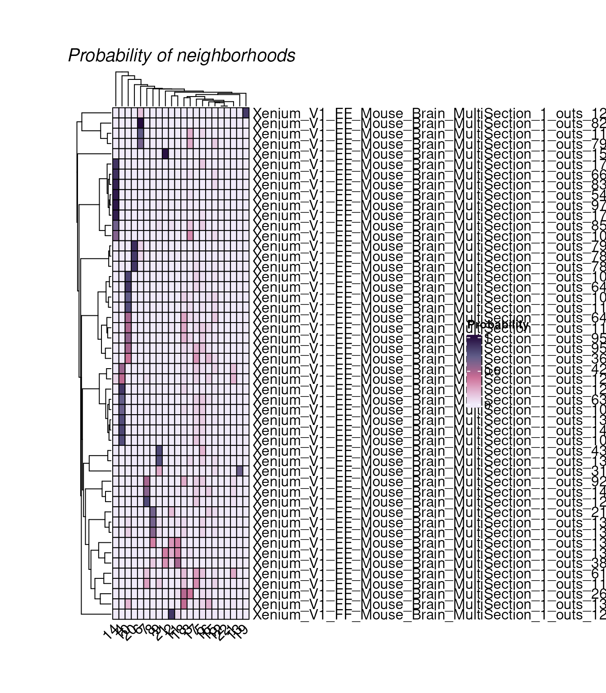
We can then merge the neighborhood results with the
SpatialExperiment object using mergeHoodSpe so
that we can conduct more neighborhood-related analysis.
tx_spe_sample_1 = tx_spe_sample_1 |> mergeHoodSpe(hoods)
tx_spe_sample_1## # A SpatialExperiment-tibble abstraction: 31,938 × 40
## # Features = 541 | Cells = 31938 | Assays = counts, logcounts
## .cell sample_id cell_id transcript_id qv region in_tissue sizeFactor
## <chr> <fct> <fct> <dbl> <dbl> <fct> <lgl> <dbl>
## 1 Xenium_V1_… 1 125137 2.82e14 33.3 SSp-b… TRUE 0.779
## 2 Xenium_V1_… 1 5000 2.82e14 33.6 CA2 TRUE 0.929
## 3 Xenium_V1_… 1 67843 2.82e14 32.6 RSPd1 TRUE 0.333
## 4 Xenium_V1_… 1 134051 2.82e14 32.5 fiber… TRUE 0.572
## 5 Xenium_V1_… 1 93903 2.82e14 30.8 TEa2/3 TRUE 1.74
## 6 Xenium_V1_… 1 11074 2.82e14 32.0 MEZ TRUE 0.715
## 7 Xenium_V1_… 1 44945 2.82e14 32.5 alv TRUE 0.341
## 8 Xenium_V1_… 1 160596 2.82e14 30.8 SSs5 TRUE 0.862
## 9 Xenium_V1_… 1 125886 2.82e14 32.6 SSp-b… TRUE 0.228
## 10 Xenium_V1_… 1 30417 2.82e14 34.5 int TRUE 0.868
## # ℹ 31,928 more rows
## # ℹ 32 more variables: clusters <chr>, X1 <dbl>, X10 <dbl>, X11 <dbl>,
## # X12 <dbl>, X13 <dbl>, X14 <dbl>, X15 <dbl>, X16 <dbl>, X17 <dbl>,
## # X18 <dbl>, X19 <dbl>, X2 <dbl>, X20 <dbl>, X21 <dbl>, X22 <dbl>, X3 <dbl>,
## # X4 <dbl>, X5 <dbl>, X6 <dbl>, X7 <dbl>, X8 <dbl>, X9 <dbl>, x <dbl>,
## # y <dbl>, PC1 <dbl>, PC2 <dbl>, PC3 <dbl>, PC4 <dbl>, PC5 <dbl>,
## # UMAP1 <dbl>, UMAP2 <dbl>We can see what are the neighborhood distributions look like in each
cluster using plotProbDist.
tx_spe_sample_1 |>
plotProbDist(
pm_cols = colnames(hoods),
by_cluster = TRUE,
plot_all = TRUE,
show_clusters = as.character(seq(10))
)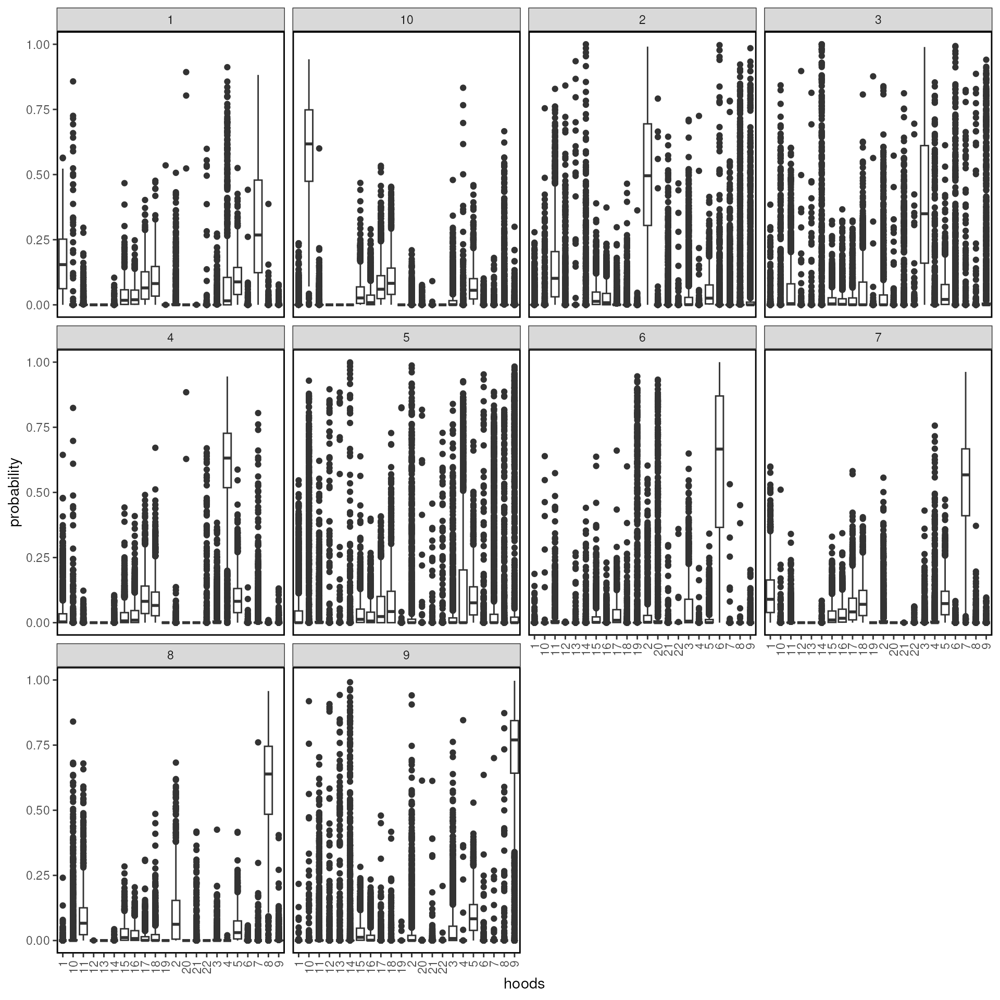
Session Information
## R version 4.5.0 (2025-04-11)
## Platform: x86_64-pc-linux-gnu
## Running under: Ubuntu 24.04.2 LTS
##
## Matrix products: default
## BLAS: /usr/lib/x86_64-linux-gnu/openblas-pthread/libblas.so.3
## LAPACK: /usr/lib/x86_64-linux-gnu/openblas-pthread/libopenblasp-r0.3.26.so; LAPACK version 3.12.0
##
## locale:
## [1] LC_CTYPE=en_US.UTF-8 LC_NUMERIC=C
## [3] LC_TIME=en_US.UTF-8 LC_COLLATE=en_US.UTF-8
## [5] LC_MONETARY=en_US.UTF-8 LC_MESSAGES=en_US.UTF-8
## [7] LC_PAPER=en_US.UTF-8 LC_NAME=C
## [9] LC_ADDRESS=C LC_TELEPHONE=C
## [11] LC_MEASUREMENT=en_US.UTF-8 LC_IDENTIFICATION=C
##
## time zone: Etc/UTC
## tzcode source: system (glibc)
##
## attached base packages:
## [1] stats4 stats graphics grDevices utils datasets methods
## [8] base
##
## other attached packages:
## [1] MoleculeExperiment_1.9.0 scico_1.5.0
## [3] hoodscanR_1.7.0 tidySpatialExperiment_1.5.0
## [5] SpatialExperiment_1.19.0 tidySummarizedExperiment_1.19.0
## [7] ttservice_0.4.1 tidySingleCellExperiment_1.19.0
## [9] SubcellularSpatialData_1.5.0 ExperimentHub_2.99.0
## [11] AnnotationHub_3.99.1 BiocFileCache_2.99.0
## [13] dbplyr_2.5.0 scran_1.37.0
## [15] scater_1.37.0 scuttle_1.19.0
## [17] SingleCellExperiment_1.31.0 SummarizedExperiment_1.39.0
## [19] Biobase_2.69.0 GenomicRanges_1.61.0
## [21] GenomeInfoDb_1.45.3 IRanges_2.43.0
## [23] S4Vectors_0.47.0 BiocGenerics_0.55.0
## [25] generics_0.1.3 MatrixGenerics_1.21.0
## [27] matrixStats_1.5.0 RColorBrewer_1.1-3
## [29] ggspavis_1.15.0 dittoSeq_1.21.0
## [31] colorspace_2.1-1 tibble_3.2.1
## [33] forcats_1.0.0 stringr_1.5.1
## [35] glue_1.8.0 purrr_1.0.4
## [37] tidyr_1.3.1 dplyr_1.1.4
## [39] plotly_4.10.4 ggplot2_3.5.2
## [41] here_1.0.1
##
## loaded via a namespace (and not attached):
## [1] RcppAnnoy_0.0.22 splines_4.5.0 later_1.4.2
## [4] bitops_1.0-9 filelock_1.0.3 lifecycle_1.0.4
## [7] httr2_1.1.2 doParallel_1.0.17 edgeR_4.7.2
## [10] rprojroot_2.0.4 lattice_0.22-7 magrittr_2.0.3
## [13] limma_3.65.0 sass_0.4.10 rmarkdown_2.29
## [16] jquerylib_0.1.4 yaml_2.3.10 metapod_1.17.0
## [19] httpuv_1.6.16 ggside_0.3.1 cowplot_1.1.3
## [22] DBI_1.2.3 abind_1.4-8 RCurl_1.98-1.17
## [25] rappdirs_0.3.3 circlize_0.4.16 ggrepel_0.9.6
## [28] irlba_2.3.5.1 terra_1.8-42 pheatmap_1.0.12
## [31] dqrng_0.4.1 pkgdown_2.1.2 codetools_0.2-20
## [34] DelayedArray_0.35.1 shape_1.4.6.1 tidyselect_1.2.1
## [37] UCSC.utils_1.5.0 farver_2.1.2 ScaledMatrix_1.17.0
## [40] viridis_0.6.5 jsonlite_2.0.0 GetoptLong_1.0.5
## [43] BiocNeighbors_2.3.0 ellipsis_0.3.2 iterators_1.0.14
## [46] ggridges_0.5.6 systemfonts_1.2.3 foreach_1.5.2
## [49] tools_4.5.0 ragg_1.4.0 Rcpp_1.0.14
## [52] gridExtra_2.3 SparseArray_1.9.0 xfun_0.52
## [55] mgcv_1.9-3 EBImage_4.51.0 withr_3.0.2
## [58] BiocManager_1.30.25 fastmap_1.2.0 bluster_1.19.0
## [61] fansi_1.0.6 digest_0.6.37 rsvd_1.0.5
## [64] R6_2.6.1 mime_0.13 textshaping_1.0.1
## [67] Cairo_1.6-2 jpeg_0.1-11 RSQLite_2.3.11
## [70] utf8_1.2.5 data.table_1.17.0 httr_1.4.7
## [73] htmlwidgets_1.6.4 S4Arrays_1.9.0 uwot_0.2.3
## [76] pkgconfig_2.0.3 gtable_0.3.6 blob_1.2.4
## [79] ComplexHeatmap_2.25.0 XVector_0.49.0 htmltools_0.5.8.1
## [82] fftwtools_0.9-11 clue_0.3-66 scales_1.4.0
## [85] png_0.1-8 knitr_1.50 rjson_0.2.23
## [88] nlme_3.1-168 curl_6.2.2 GlobalOptions_0.1.2
## [91] cachem_1.1.0 BiocVersion_3.22.0 parallel_4.5.0
## [94] vipor_0.4.7 AnnotationDbi_1.71.0 desc_1.4.3
## [97] pillar_1.10.2 grid_4.5.0 vctrs_0.6.5
## [100] RANN_2.6.2 promises_1.3.2 BiocSingular_1.25.0
## [103] beachmat_2.25.0 xtable_1.8-4 cluster_2.1.8.1
## [106] beeswarm_0.4.0 evaluate_1.0.3 magick_2.8.6
## [109] cli_3.6.5 locfit_1.5-9.12 compiler_4.5.0
## [112] rlang_1.1.6 crayon_1.5.3 labeling_0.4.3
## [115] fs_1.6.6 ggbeeswarm_0.7.2 stringi_1.8.7
## [118] viridisLite_0.4.2 BiocParallel_1.43.0 Biostrings_2.77.0
## [121] lazyeval_0.2.2 tiff_0.1-12 Matrix_1.7-3
## [124] sparseMatrixStats_1.21.0 bit64_4.6.0-1 KEGGREST_1.49.0
## [127] statmod_1.5.0 shiny_1.10.0 tidygate_1.0.14
## [130] igraph_2.1.4 memoise_2.0.1 bslib_0.9.0
## [133] bit_4.6.0References
<mangiola.s at wehi.edu.au>↩︎